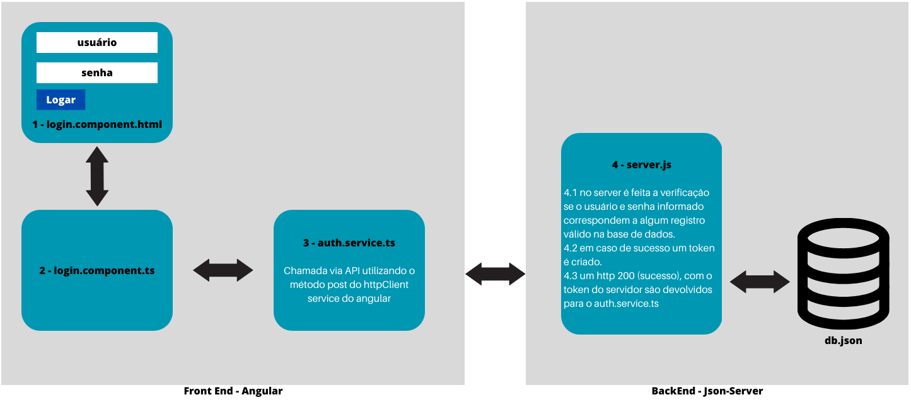

{{ textoHtml }}
{{ textoHtmlIfNGTemplate }}
{{textoHtmlHidden}}
{{ textoSwitchCase }}
{{ textoFor }}
{{textoTrackBy}}
{{ textoClassBinding }}
Clique na estrela para visualizar o funcionamento do componente
{{ textoNgClass }}
O que também pode ser feito com o uso de uma expressão no class binding, passando a
expressão como um objeto, bastante similar ao ngClass, assim:
{{textoExpressaoClassBinding}}
{{ textNgIfSemAsterisco }}
ng generate component component-name , conde component-name
é o nome do seu componente. Por padrão, este componente cria o seguinte:
| Modo | Detalhe |
|---|---|
| ViewEncapsulation.ShadowDom | O Angular utilizará o Shadow DOM API built-in do navegador para aplicar os estilos de forma isolada ao componente, contudo, nem todos os navegadores possuem suporte para tal. |
| ViewEncapsulation.Emulated | O Angular modifica os seletores CSS aplicados ao componente, dessa forma ele emula o Shadow DOM.
Exemplo: quando definimos no css do nosso componente um h1 color: red; os elementos h1
definidos no html do componente receberão um atributo do tipo ngcontent, e o angular criará
uma marcação css diferenciada para todos os h1 que tiverem esse atributo, assim:
{{textoEncapsulation}}
|
| ViewEncapsulation.None | O Shadow DOM não é aplicado, assim, os estilos são válidos globalmente. |
@Input => Parent => Child.
@Input() item = '';
{{textoInputP}}
{{textoInputCP}}
{{textoInputValor}}
{{ textoOutputP }}
{{ textoOutputEF }}
{{textoCodigoAddItem}}
{{textoCodigoChamada}}
O event binding, (newItemEvent)='addItem($event)', liga o evento do elemento filho ao
método do elemento pai. o objeto $event contém os dados que o usuário informa no . Para ver
o @Output() funcionando, adicione o seguinte no parent's template:
{{textoExibicao}}
{{ textoNgModel }}
{{textoNgForm}}
{{textoNgModelGroup}}
ao clicar no checkbox é possível ver o valor da variável ngModel a ele associada,
conseguimos isso através da instrução f.value | json
{{textoObjetoContact}}
o select box seria assim:
{{textoSelectBox}}
{{textoNgValue}}
[formGroup]="form" e atribuição de valor
nos inputs utilizando o atributo formControlName para username e password.
Imagine que você precise criar uma lista de itens de supermercado, a medida que o usuário preencha um campo de texto eles devem ser armazenados em uma lista e exibidos na tela, outra funcionalidade importante é que os itens sejam removidos quando clicados. Para fazer isso, basta criar um método de adição de itens, cada item será parte do FormArray, a implementação deste método seria assim:
Perceba que a função addTopic recebe como parâmetro um input text field do html, perceba também que uma property de nome topics foi criada para facilitar a referência ao FormArray, sempre que o addTopic for chamado será inserido no FormArray um novo FormControl com o valor informado no FrontEnd, o código do FrontEnd fica assim:
Teste o Componente abaixo: digite um texto qualquer e tecler enter para chamar o método addTopic, para remover, basta clicar sobre o item da lista que o método removeTopic será chamado.
Veja que o padrão builder separa a representação do objeto da sua lógica de construção, ele precisa de um construtor para criar o builder, esse builder possui métodos parar criar objetos da família de formulários. Veja também que o código que o FormBuilder gera é menor do que a construção do FormGroup.
Paradigma em que se baseia o conceito de serviços, estatui que uma classe deve ser responsável por apenas um tipo de coisa, uma classe que faz muitas coisas é difícil de manter e testar. Por exemplo, apresentação da lógica de visão e recuperação de dados não devem estar na mesma classe, isso aumenta acoplamento e reduz coesão pois as rotinas de recuperação de dados, possivelmente serão repetidas em várias classes. Para solucionar essa questão, precisamos separar os conceitos de lógica de apresentação e tratamento de dados, para isso vamos criar um serviço de acesso a dados para o componente. Ou seja, o serviço será a camada intermediária entre o componente e o backend.
Veja no código abaixo que a classe PostService se encarrega de acessar e manipular os dados, a maneira como ela faz isso está encapsulada na classe de serviço, esses detalhes não devem ser de responsabilidade do componente, o qual deve se preocupar tão somente com a apresentação. Neste modelo o componente utiliza injeção de dependência para criar uma instância dos serviços que precisa em seu construtor, como os métodos do HttpClient retornam Observables, para poder ter acesso aos dados na camada de lógica de apresentação os métodos da classe subscrevem o retorno dos services methods e manipulam os dados (map, reduce) conforme conveniência.
O método post do HTTPClient possui 15 overloads e portanto várias implementações, usualmente leva 3 parâmetros, a url, o body e as options http (opcionais). Como todo método httpclient ele retorna um Observable de alguma coisa, pode ser um ArrayBuffer, um blob, uma string um evento, etc..
O createPost recebe um input text field como parâmetro, faz uma chamada http post, esse método
passa a url onde se deseja postar e como segundo argumento passa o valor postado no input.
por último subscreve as alterações para ser notificado a medida que elas ocorrerem, a subscrição
adiciona o valor postado no server a lista de posts, usa a função splice para adicionar no
início da lista e não no final, como seria se fosse utilizado o push.
Teste o código inserindo um dado qualquer.
O http patch atualiza apenas os campos que foram alterados, de maneira que ele não envia o objeto inteiro para o server, como faz o put. Abaixo um exemplo:
O http delete cria um observable que quando subscrito exclui um registro do servidor. não possui um body, apenas uma url e opções http. Sua implementação ficaria assim:
Observe que a implementação do método é bem simples, basta passar a url indicando o item que deseja excluir, na subscrição do método você passa o que deseja fazer com o objeto manipulado, no exemplo, foi excluído do template o elemento correspondente.
Suponha que deseje criar um serviço de acesso a dados, uma chamada para um método de recuperação de dados, outro que busque por id específico, outro que delete e outro que atualize, repare que são operações comuns que se repetem em vários componentes, ou seja, podemos criar métodos genéricos para tratar essa questão, veja no código abaixo um exemplo do que seria uma classe de serviços.
Um Router é um serviço que provê navegação entre views e manipulação de URLs
1º Configurar as rotas - é o mapeamento de um caminho para um componente; 2º Adicionar um router outlet, é onde é mostrado o componente correspondente quando uma dada rota se torna ativa; 3º Adicionar links.
1. Para configurar uma rota são necessários os seguintes passos: importar o AppRoutingModule para o seu AppModule,
adicioná-lo ao seu imports array.
2. Defina suas rotas no seu array de rotas. Cada rota neste array é um objeto JS que contém duas
propriedades. A primeira propriedade, path, define a URL para a rota. A segunda propriedade,
component, define o componente que o Angular deve utilizar para o caminho. Veja o exemplo abaixo:
Dentro da seção de imports do AppModule, informe RouterModule.forRoot(routes) indicando
ao módulo de rotas, as rotas disponíveis da sua aplicação.
3. Agora adicione suas rotas na sua aplicação, primeiro adicione links para os componentes, atribua
a uma âncora o que você quer adicionar como rota para o routerLink attribute. Configure o valor do
atributo ao componente para mostrar quando um usuário clica em cada link.
Em seguida, atualize o template do componente para incluir o router-outlet. Este elemento informa ao angular para atualizar a view da aplicação com o componente da rota selecionada. o router-outlet é uma tag, você deve colocá-la onde quer que os componentes apareçam, veja o exemplo abaixo em funcionamento.
A ordem das rotas é importante o Router utiliza a estratégia first-match, logo, rotas mais específicas devem ser colocadas acima de rotas menos específicas. Lista de rotas com caminhos estáticos devem vir primeiro, a rota com wildcard deve vir por último, pois ela casa com qualquer URL
Comumente é preciso passar informações de um componente para outro. Por exemplo, considere uma aplicação que mostre uma lista de compras, cada item da lista tem um id único. Para editar um item o usuário clica no botão de edição, o qual abre o componente de editar item de compras, você precisa que o componente carregue os dados daquele item clicado, para isso um router pode ser usado para passar a informação, podemos utilizar ActivatedRoute interface.
Para obter informações de uma rota, importamos o ActivatedRoute e o ParamMap para o componente onde queremos utilizar., em seguida injetamos no construtor a instância do ActivatedRoute, sem seguida atualizamos o método ngOnInit() para acessar o ActivatedRoute e rastrear o parâmetro desejado.
ParamMap é uma interface localizada no módulo router do Angular, é um mapeamento que provê acesso
aos parâmetros requeridos e opcionals específicos para uma rota. Ele possui os seguintes membros:
property keys:string[] -> somente para leitura, guarda o nome dos parâmetros no mapa.
método has(name: string):boolean -> Diz se o mapa contém um dado parâmetro
método get(name: string) : string | null -> retorna um valor para o parâmetro dado
método getlAll(name: string): string[] -> retorna um array contendo um ou mais valores ou um array vazio.
Veja no exemplo abaixo:
Repare que o param é um observable que subscreve o resultado para poder fazer a manipulação de dados, o uso do Observable é para manter os dados do componente, para não destruí-lo e recriá-lo em seguida, é utilizado em contextos onde o usuário não irá chamar outro componente, irá apenas informar novos parâmetros.
Simplesmente adicione o parâmetro adicional na rota no app.module, adicione também no template corresopndente na property routerLink, conforme exemplo abaixo:
Para criar parâmetros opcionais utilizamos o queryParamMap
Clique em um link para ativar a rota com dois parâmetros, conforme é possível visualizar na barra de endereços. Ao clicar no link o router-outlet é ativado e exibido o componente associado ao router-link que foi clicado. lembrando que essa associação é definida no app.module.ts, associação path -> component, onde definimos as rotas da nossa aplicação.
Abaixo uma abstração da arquitetura utilizada neste exemplo:
O esquema de autenticação proposto utiliza um json-server para simular o backend, a implementação da regra de login será feita no json-server. a base de dados com as informações de usuário, senha e perfil será armazenada em um arquivo json. O primeiro passo é instalar o json-server através do comando:
npm install json-server --save-dev
Também se faz necessário instalar o jwt-token pois será utilizado para autenticar o usuário no cliente, de maneira simples o usuário entra com usuário e senha o server verifica se os dados informados constam na base json e retorna para o cliente um token, o token é salvo no navegador e passa a ser utilizado como meio para verificar se o usuário está ou não autenticado. Para instalar o jwt utilize o comando abaixo:
npm install jsonwebtoken --save
aproveite para instalar o nodemon para que o json-server fique sempre no estado watch,
atualizando automaticamente.
npm install nodemon --save-dev
Finalizadas estas instalações crie uma entrada em scripts no package.json para simplificar
o start do seu servidor json.
"start-auth": "nodemon server/server.js"
Convém inicialmente criar uma estrutura de diretórios para armazenar o servidor json, como será utilizado apenas para testes locais podemos criar dentro da pasta do projeto, ficaria assim:
/server
server.js
/data
db.json
Abaixo o nosso db.json:
Criado o banco de dados precisamos construir as telas de login, e implementar os detalhes no server. Os detalhes disso estão explicitados nas abas Cliente e Servidor do menu acima.
O template de login tem um campo para usuário e outro para senha mais um botão para submeter os dados informados.
O TypeScript do login fica assim:
é uma classe que contém uma propriedade do tipo boolean chamada invalidLogin, essa propriedade armazena se a tentativa de login foi ou não bem sucedida, no construtor da classe temos injetado o authservice, que irá ser utilizado na chamada do método de login. Além deste serviço, o componente também se utiliza do router service e do activatedRouteService, são usados para fazer o correto redirecionamento quando da tentativa de login do usuário. Repare também que o método signIn captura eventuais erros da aplicação e seta a propriedade invalidLogin como verdadeira quando algum erro é capturado.
O código de serviço de login fica assim:
esse serviço é responsável por chamar a API que faz a verificação de usuário e senha, além de outras funcionalidades como o logout, verifica se o usuário está logado e também qual é o usuário logado. O mais relevante para o nosso exemplo é o método login, que recebe as credenciais e utilizando do método post do serviço httpClient do Angular faz uma chamada ao servidor (Json-Server), passa também um cabeçalho informado que o content-type é do tipo json. A partir da resposta ele mapeia o response e verifica se há uma resposta e um token, retornando verdadeiro criasse um token no cliente com os mesmos dados do token criados no servidor, exceto o secret, pois somente o server possui o secret. Caso haja algum erro, o erro é lançado na pilha de execução.
Neste exemplo utilizamos o json-server para simular um servidor, mas provavelmente em uma aplicação real o uso seria em uma plataforma asp.net ou Java. abaixo o código:
O uso do json-server não está no escopo deste tutorial, o importante aqui é compreender que o servidor encapsula a responsabilidade pela regra de negócio de criação do token e pela autenticação. A função isAuthenticated recebe o usuário e senha e verifica na nossa base de dados json se o par de chave valor estão na base, o server.post do endpoint /auth/login é o entry point do server devido a chamado do nosso serviço de autenticação, que chama exatamente esse endpoint, passa um request que contém um body, esse argumento é transmitido ao método isAuthenticated, caso o retorno seja falso um status 401 é retornado juntamente com a mensagem de 'email e /ou senha incorretos.', mas caso seja verdadeiro um token é criado a partir do usuário, senha, perfil e um retorno 200 é enviado.
Agora que cuidamos da autenticação, partiremos para a autorização, com o que temos até agora não como impedir, por exemplo, que alguém acesse diretamente a página localhost:4200/admin, ou seja, de nada adianta autenticarmos alguém se não pudermos avaliar se essa identidade possui autorização para acessar determinadas páginas, é o que faremos agora. Para utilizarmos a autorização, podemos lançar mão do serviço authservice, como no código abaixo:
Essa classe utiliza o serviço de autorização para redirecionar qualquer usuário que não seja administrador para a página no-access, para isso, ela implementa a interface CanActivate, que possui um método de mesmo nome, basicamente este método retorna um booleano que decide se determinada rota será ou não ativada, no caso, a rota não será ativada se o retorno for false. Um detalhe final é que é preciso dizer, na constate que guarda as rotas da aplicação, a condição de ativação para as rotas, informando o authguard como sendo a condição, assim:
| Tipo | Detalhes |
|---|---|
| next | Parâmetro obrigatório, um handler para cada valor entregue. Chamado nenhuma ou mais vezes depois que a execução se inicia. |
| error | Opcional. Um handler para uma notificação de erro. Um erro para a execução da instância do Observable |
| complete | Opcional: Um handler para notificar a execução completa. Valores atrasados podem continuar a serem entregues ao next handler depois que a execução é completa. |
Uma instância de um Observable somente publica valores quando é subscrito. A subscrição é feita através do método subscribe() da instância, passando um observer object para receber as notificações. Alguns métodos do RxJS podem ser usados para criar observables, são eles:
| Método RxJS | Detalhes |
|---|---|
| of(...items) | Retorna uma instância de Observable que entrega os valores fornecidos como argumentos de forma síncrona |
| from(iterable) | Converte seus argumentos para uma instância de Observable. Usualmente utilizado para converter uma array em um Observable. |
Uma função next() pode receber uma string message, event objects, valores numéricos, ou estruturas, dependendo do contexto, em geral, os dados publicados por um observable são referenciados como um stream. Qualquer tipo de valor pode ser representado com um observable, e os valores são publicados como um stream.
Uma maneira de chamar um subscribe é passando um objeto com 3 valores nomeados, sendo que os dois último são opcionais, um next, um error e um complete. Veja no exemplo abaixo:
Uma promise é uma promessa de que algo irá ou não irá ocorrer, utilizada na programação assíncrona para respresentar um valor futuro, se difencia do Observable pelo fato de que seu valor é tido por antecipação (Eager Load), enquanto que o Observable é lazy load, é preciso subscrever o resultado para obtê-lo. Há muitos operators que só existem nos Observables, não sendo possível utilizá-los com promises, por isso é preferível utilizar os Observables.
Uma instância de componente tem um ciclo de vida, que inicia quando o Angular cria a instância do componente e renderiza o componente junto com seus childs items. O ciclo de vida continua com a detecção de alterações, a medida que o Angular verifica por alterações nos dados do componente, em ambos, componente e template. O ciclo de vida finaliza quando o Angular destrói a instância do componente e remove o template do DOM. As diretivas tem um ciclo de vida similar, a medida que o Angular cria, atualiza e destrói instâncias no curso da execução. A aplicação pode utilizar métodos para manipular o ciclo de vida dos componentes e seus eventos.
Um exemplo de um life cycle event seria: Quando o Angular (criar ou renderizar, ou criar e renderizar seus filhos, destruir um componente) faça algo definido. Um destes eventos é o ngOnInit() o qual é criado automaticamente pelo CLI, observe que os componentes padrões levam a interface OnInit(), a criação do componente por padrão implementa a interface OnInit() a qual possui a função ngOnInit(): void. Este método será invocado quando o componente for inicializado, ou seja, está associado ao life cycle hook de inicialização do componente.
| Hook Method | Propósito | Timing |
|---|---|---|
| ngOnChanges() | Acionado quando o Angular seta ou reseta data-bound input properties. O método recebe um objeto SimpleChanges dos valores atuais e anteriores de uma property. (Observação: Isso acontece frequentemente, logo, qualquer operação aqui impacta significativamente a performance) | Chamado antes do ngOnInit() (se o componente tiver bound-inputs) e sempre que um ou mais data-bound input properties sejam alteradas. (Observação: Se o seu componente não possui inputs ou uso do componente sem acionamento dos inputs, o framework não invocará o ngOnChanges(). |
| ngOnInit() | Inicializa a diretiva ou componente depois do primeiro display dos data-bound properties e atribuições das diretivas ou properties dos componentes. | Chamado uma vez, depois do primeiro ngOnChanges(). é chamado inclusive quando o ngOnChanges() não é, caso onde não há template-bound inputs. |
| ngDoCheck() | Detecta e atua sob mudanças que o Angular não pode ou não vai detectar por si só. | Chamado imediatamente depois do ngOnChanges() em cada change detection, e imediamente depois do ngOnInit() durante a execução inicial do componente. |
| ngAfterContentInit() | Atual quando o Angular projeta conteúdo externo dentro dos component views, ou dentro da view em que a diretiva está. | Chamado uma única vez, depois do primeiro ngDoCheck() |
| ngAfterContentChecked() | Atua quando o Angular checa o conteúdo projetado dentro da diretiva ou componente. | Chamado depois do ngAfterContentInit() e para cada ngDoCheck() |
| ngAfterViewInit() | Atua depois que o Angular inicializa os component views e chidls views, ou as views que contém a diretiva | Chamado uma vez, depois do ngAfterContentChecked() |
| ngAfterViewChecked() | Atua depois do Angular checar as comoponent views e child views, ou as views que contém as diretivas | Chamado depois do ngAfterViewInit() e em cada ngAfterContentChecked() |
| ngOnDestroy() | Limpa tudo antes do Angular destruir a diretiva ou o componente. Unsubscribe Observables e event handlers associados para evitar memory leaks. | Chamado imediamente antes do Angular destruir a diretiva ou componente |
Um exemplo clássico do uso de ngOnInit() é para fazer uma chamada remota de valores a serem exibidos na página, é comum o uso de chamadas https em sistemas de informação. Fazer essa chamada no construtor da aplicação não é aconselhável pois a criação do componente pelo construtor deve ser segura, consumir poucos recursos e ser simples. O método ngOnInit() pode ser utilizado para isso. Não é recomendável que construtores sejam complexos, eles devem se ater a iniciar variáveis locais para valores simples.
As exceções são propagadas quando erros ou eventos inesperados ocorrem durante a execução de um programa. Quando uma exceção é lançada, o fluxo regular do programa é interrompido, um erro é lançado na pilha de chamadas, um catch poderá capturar o erro e tratá-lo, caso não exista um catch o error handler padrão da linguagem irá ser acionado. O bloco catch é utilizado para capturar/tratar o erro lançado, recuperando do erro ou finalizando o programa de uma maneira organizada, manipulando o erro e dando feedback ao usuário. Para compreender o funcionamento do tratamento de exceções, é também importante compreender a pilha de chamadas (callstack) de uma exceção. Quando uma exceção é lançada uma estrutura de dados armazena a ordem em que os objetos e funções foram chamados.
Há pelo menos dois tipos de erros, os experados e os inesperados. sobre os erros inesperados
podemos ainda subdividi-los em três tipos:
Servidor está offline;
Rede está off; (Server está on, mas o cliente não consegue alcançar, erro no endereço informado, por exemplo)
Exceções não tratadas. (Pode ser por conta de um bug)
Há pelos menos dois tipos gerais de erros esperados:
Not Found errors (404);
Bad Request errors (400)
Um observable pode ser utilizado para retornar do servidor os erros de validação de um determinado formulário, esses erros podem ser subscritos e manipulados na property error do subscribe, veja o exemplo abaixo:
Observe que a segunda property do observable passado ao subscribe leva um parâmetro do tipo Response, esse parâmetro guarda uma array de erros e várias propriedades como o status do erro, podendo ser um erro esperado, como o erro 400, para erros inesperados utilizamos o else. Está comentado no código o this.form.setErrors(e), esse código passaria para um objeto form os erros retornados do servidor.
O tratamento de erros deveria ser separado do componente, poderia estar na camada de serviços. Para separar os conceitos vamos criar classes para o tratamento dos erros esperados, NotFound e BadInput, ambas extendendo AppError. Assim, passamos a tratar os erros da nossa aplicação. Na camada de serviços, utilizamos o método pipe para empilhar o mapeamento do response e capturarmos o erro, veja no código abaixo:
No exemplo, foi transferido pro serviço a responsabilidade de lidar com o erro na camada http. ele verifica o status do erro e lança o erro para quem chamou o serviço. Na sequência o componente verifica o tipo de erro da aplicação pelo tipo da instância do erro. Veja o código 3:
o método é subscrito e em caso de erro ele verifica o tipo e exibe uma mensagem para o usuário. O tipo do erro é uma implementação que não cabe ao componente e por isso foi delegado a camada de serviço essa verificação. Aqui no componente ele apenas verifica qual a classe do erro para que exiba a mensagem adequada.
Imagine que você tenha um erro comum a vários componentes, um erro inesperado por exemplo. É um erro que pode ser reutilizado e portanto não precisa repetir a mensagem em todos os componentes. Para criar um manipulador global de um erro, utilize a classe nativa do Angular, ErrorHandler, extenda a classe e implemente o erro. Veja o exemplo no código 4.
Agora você precisa dizer ao Angular que toda vez que o ErrorHandler for chamado, ou seja, sempre que um erro acontecer, o Angular deve chamar o seu ErrorHandler e não o dele. Para isso é preciso ir no app.module.ts e dizer para substituir o provider ErrorHandler pelo AppErrorHandler, assim:
Agora sempre que um erro inesperado ocorrer, utilize a instrução throw para lançar para o ErrorHandler. Caso o tipo de erro possível seja apenas um erro inesperado, sequer é preciso chamar o callback de error do subscribe, pois o ErrorHandler é chamado automaticamente. Em casos em que há na pilha de erros do callback possíveis erros esperados, é preciso utilizar o callback para poder tratar os erros esperados, como no código abaixo, em que o método delete precisa da chamada do callback de error e o método ngOnInit não, pois só trata de erros inesperados.
A implantação de uma aplicação precisa levar em conta que ambiente de desenvolvimento e produção, usualmente, possui alguma diferenças e portanto, você não vai querer copiar exatamente o que você tem no ambiente de desenvolvimento para o ambiente de testes. a pasta node_modules, por exemplo, é muito grande e não precisa ser copiada por inteiro, podemos, ao invés disso, utilizar o package.json para baixar os pacotes necessários no servidor de produção. Outra questão que chama atenção são os arquivos bundles, que são amontoados de arquivos js em um único arquivo, para economizar chamadas de procedimento, ao invés do server chamar vários arquivos js, ele chama um único que contém todas as funções necessárias.
Consiste em tirar os espaços em brancos, normalmente arquivos minificados são nomeados da seguinte forma arquivo.min.js
Consiste em reduzir o nome das classes e métodos a duas letras, por exemplo: HomeComponent se transforma em hC, onClick()vira oc().
É a combinação de múltiplos arquivos javascript em um só, dessa forma a aplicação executa o download apenas uma vez, ao invés de fazer várias requisições.
Elimina códigos que não são utilizado em parte alguma da aplicação, libraries ou código
Angular compiler transforma código javascript em outro código javascript, e o compilador atua Just in Time, a desvantagem dessa abordagem é que para cada usuário o compilador terá que executar a compilação de toda a aplicação, quanto mais componentes, mais lenta fica, é ineficiente para produção. Uma outra abordagem é utilizar a o modelo AOT (ahead of time), nesse modelo a compilação é feita antes do deploy e não é preciso fazê-la para cada usuário, o usuário irá baixar o arquivo final pré-compilado, assim a aplicação iniciará mais rápido, os bundles possuem tamanho menor, os erros do template podem ser capturados em tempo de compilação, já que nesse modelo a compilação não é em tempo de execução. Este modelo também é mais seguro.
As configurações de build de produção estão dentro do arquivo angular.json, dentro da chave "build" -> "configuration" onde há pelo menos três configurações, production, development e test. a pasta dist, na raiz da aplicação corresponde a aplicação compilada com os arquivos necessários para a aplicação funcionar. Esta pasta é a versão otimizada, minificada e com os assets necessários para levar a pasta para produção.
usualmente os arquivos de definição de ambiente, "environment", são encontrados na pasta app/environments, dentro dessa pasta, por padrão, existem dois arquivos typescript, um para o ambiente de produção "environment.prod.ts e outro para desenvolvimento: environment.ts. basicamente eles contêm um objeto de mesmo nome com a propertie production setada para true e false, respectivamente, por motivos óbvios.
É um tipo de programa que verifica se seu código obedece as melhores práticas de programação e organização do código, um linter conhecido é o tslint.